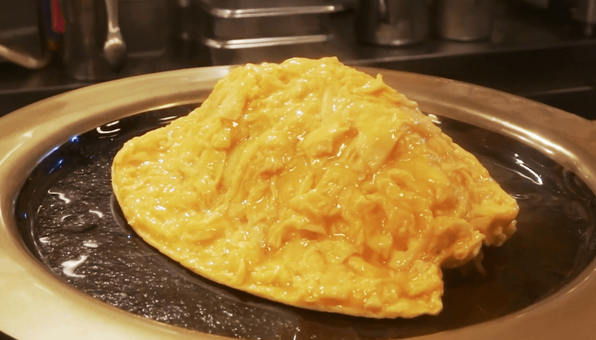

Omurice

Description: My favorite thing to cook while I was alone at Cal Poly.
Ingredients
- Rice
- Onion
- Garlic
- Dried Red Chilis
- Asparagus
- Mushrooms
- Jalapeno
- Chinese Sausage
- Soy Sauce
- Curry Powder
- Black Pepper
- Eggs
- Curry Roux
- Water
Directions
- Cook rice
- Cut onion into strings. Mince garlic. Heat oil in pan on medium and cook till fragrant
- Throw in chilis. Cut tender parts of asparagus into one inch pieces. Throw into pan
- Slice mushrooms and cut jalapeno into long slices. Throw in
- Slice sausage and throw in
- Splash with soy sauce. Season with curry powder and pepper
- Add rice and mix with veggies and sausage. Season with more soy sauce and curry powder
- Flatten rice in pan. Turn heat to high for 1-2 minutes then turn heat off and let bottom crisp. Move rice onto place
- Break eggs into oiled pan on low heat. Stir in the pan with chopsticks til lightly scrambled. Before completely cooked, start folding over edges. Flip omelete on top of rice
- Dissolve curry roux in hot water. Pour over omelete and enjoy